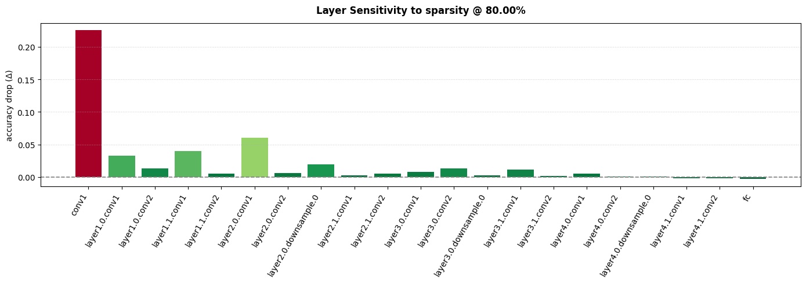

import torch
from fastai.vision.all import *
from copy import deepcopy
from torchvision.models import resnet18, ResNet18_Weights
from fasterai.analyze.sensitivity import analyze_sensitivity, SensitivityAnalyzer
from fasterai.core.all import large_final
from fasterai.sparse.all import Sparsifier
from fasterai.prune.all import PrunerSensitivity Analysis
Measure what each layer costs when it is compressed on its own
analyze_sensitivity compresses one layer at a time, evaluates the model with a metric you provide, restores the layer, and moves on. It reports one Δ per layer: the metric lost by compressing that layer alone.
1. A model and a metric
A ResNet-18 fine-tuned on the cats-vs-dogs split of PETS, at 64 px. It is wrapped in a plain Learner rather than in vision_learner for two reasons that matter on this page: the module names stay the torchvision ones (layer2.0.conv1 rather than 0.5.0.conv1), and the model is the one Pruner is exercised on elsewhere in the docs.
path = untar_data(URLs.PETS)
files = get_image_files(path/"images")
def label_func(f): return f[0].isupper()
dls = ImageDataLoaders.from_name_func(path, files, label_func, item_tfms=Resize(64))
model = resnet18(weights=ResNet18_Weights.IMAGENET1K_V1)
model.fc = nn.Linear(512, 2)
learn = Learner(dls, model, metrics=accuracy)
learn.fit_one_cycle(3, 1e-3)| epoch | train_loss | valid_loss | accuracy | time |
|---|---|---|---|---|
| 0 | 0.376383 | 0.578953 | 0.754398 | 00:03 |
| 1 | 0.226512 | 0.201047 | 0.912720 | 00:03 |
| 2 | 0.109474 | 0.192538 | 0.926928 | 00:03 |
The metric is the accuracy on the validation set. The images are decoded once into tensors, because analyze_sensitivity runs one full evaluation per layer.
valid = [(xb.as_subclass(torch.Tensor), yb) for xb, yb in dls.valid]
n_valid = sum(len(yb) for _, yb in valid)
def accuracy_of(m):
"Top-1 accuracy of `m` over the validation set"
m.eval()
with torch.no_grad():
correct = sum((m(xb).argmax(1) == yb).sum().item() for xb, yb in valid)
return correct / n_valid
def wilson(k, n, z=1.96):
"k out of n and its Wilson 95% interval, as a printable string"
p, d = k / n, 1 + z**2 / n
c, h = (p + z**2 / (2 * n)) / d, z * ((p * (1 - p) / n + z**2 / (4 * n**2))**0.5) / d
return f'{k}/{n} = {100 * p:.2f}% [{100 * (c - h):.2f}, {100 * (c + h):.2f}]'
trained = deepcopy(learn.model).eval() # pristine copy; each section below starts from it
base = accuracy_of(trained)
print('baseline ', wilson(round(base * n_valid), n_valid), '- single run')baseline 1370/1478 = 92.69% [91.25, 93.91] - single runsample is the input the analyzer traces the model with. It has to be a plain torch.Tensor: a fastai TensorImage intercepts the tracing and the dependency graph comes out wrong.
sample = valid[0][0][:1].clone()
print(type(sample).__name__, tuple(sample.shape))Tensor (1, 3, 64, 64)2. Sensitivity to sparsity
Each layer in turn has 80% of its weights zeroed, is evaluated, and is restored. Every ratio in fasterai is a fraction in [0, 1], hence level=0.8; the level is a choice, not a property of the method, and section 8 runs the same analysis at 0.5, 0.7 and 0.9.
higher_is_better=True tells the analyzer that a drop in the metric marks a sensitive layer, so Δ is baseline - compressed.
result = analyze_sensitivity(
deepcopy(trained), sample, accuracy_of,
compression="sparsity",
level=0.8,
higher_is_better=True,
metric_name="accuracy",
)Computing baseline accuracy... 0.9269
Analyzing 21 layers for sparsity @ 80.00% (granularity=weight, criteria=abs)
[1/21] conv1... Δ=+0.2253
[2/21] layer1.0.conv1... Δ=+0.0325
[3/21] layer1.0.conv2... Δ=+0.0129
[4/21] layer1.1.conv1... Δ=+0.0399
[5/21] layer1.1.conv2... Δ=+0.0047
[6/21] layer2.0.conv1... Δ=+0.0602
[7/21] layer2.0.conv2... Δ=+0.0061
[8/21] layer2.0.downsample.0... Δ=+0.0189
[9/21] layer2.1.conv1... Δ=+0.0027
[10/21] layer2.1.conv2... Δ=+0.0054
[11/21] layer3.0.conv1... Δ=+0.0074
[12/21] layer3.0.conv2... Δ=+0.0135
[13/21] layer3.0.downsample.0... Δ=+0.0027
[14/21] layer3.1.conv1... Δ=+0.0115
[15/21] layer3.1.conv2... Δ=+0.0014
[16/21] layer4.0.conv1... Δ=+0.0047
[17/21] layer4.0.conv2... Δ=+0.0007
[18/21] layer4.0.downsample.0... Δ=+0.0007
[19/21] layer4.1.conv1... Δ=-0.0020
[20/21] layer4.1.conv2... Δ=-0.0020
[21/21] fc... Δ=-0.0027
✓ Analysis complete3. Reading the result
result.summary()════════════════════════════════════════════════════════════
Sensitivity Analysis: sparsity @ 80.00%
════════════════════════════════════════════════════════════
Baseline accuracy: 0.9269
Layers analyzed: 21
🔴 Most Sensitive (fragile):
1. conv1 Δ=+0.2253
2. layer2.0.conv1 Δ=+0.0602
3. layer1.1.conv1 Δ=+0.0399
4. layer1.0.conv1 Δ=+0.0325
5. layer2.0.downsample.0 Δ=+0.0189
🟢 Most Robust (compressible):
1. fc Δ=-0.0027
2. layer4.1.conv1 Δ=-0.0020
3. layer4.1.conv2 Δ=-0.0020
4. layer4.0.conv2 Δ=+0.0007
5. layer4.0.downsample.0 Δ=+0.0007summary() prints the two ends of the ranking. The metric moves one image at a time, 1/1478 = 0.07 points, so the values at the robust end of this list are within a few images of zero. conv1 is the outlier: zeroing 80% of its 9,408 weights costs 22.53 points.
for layer in result.top(3, most_sensitive=True):
print(f'{layer.name:24s} {layer.params:>9,} params Δ={100 * layer.delta:+.2f} points')conv1 9,408 params Δ=+22.53 points
layer2.0.conv1 73,728 params Δ=+6.02 points
layer1.1.conv1 36,864 params Δ=+3.99 pointsresult.plot(figsize=(14, 5))
4. Turning Δ into per-layer sparsity
to_layer_targets maps the measured Δ to one sparsity per layer, weighted by parameter count so that the mean over the model lands on target. gamma controls how far apart the layers are pushed.
targets = result.to_layer_targets(trained, target=0.5, min_ratio=0.1, max_ratio=0.8, gamma=1.5)
for name, ratio in list(targets.items())[:6]:
print(f'{name:24s} {ratio:7.2%}')conv1 10.00%
layer1.0.conv1 36.90%
layer1.0.conv2 45.57%
layer1.1.conv1 33.72%
layer1.1.conv2 49.28%
layer2.0.conv1 25.38%The dict goes straight into Sparsifier.sparsify_model.
model_s = deepcopy(trained)
sparsifier = Sparsifier(model_s, granularity='weight', context='local', criteria=large_final)
sparsifier.sparsify_model(targets)
sparsifier.print_sparsity()
Sparsity Report:
--------------------------------------------------------------------------------
Layer Type Params Zeros Sparsity
--------------------------------------------------------------------------------
conv1 Conv2d 9,408 939 9.98%
layer1.0.conv1 Conv2d 36,864 13,601 36.90%
layer1.0.conv2 Conv2d 36,864 16,797 45.56%
layer1.1.conv1 Conv2d 36,864 12,429 33.72%
layer1.1.conv2 Conv2d 36,864 18,165 49.28%
layer2.0.conv1 Conv2d 73,728 18,711 25.38%
layer2.0.conv2 Conv2d 147,456 71,736 48.65%
layer2.0.downsample.0 Conv2d 8,192 3,507 42.81%
layer2.1.conv1 Conv2d 147,456 74,036 50.21%
layer2.1.conv2 Conv2d 147,456 72,193 48.96%
layer3.0.conv1 Conv2d 294,912 141,645 48.03%
layer3.0.conv2 Conv2d 589,824 266,953 45.26%
layer3.0.downsample.0 Conv2d 32,768 16,451 50.20%
layer3.1.conv1 Conv2d 589,824 272,379 46.18%
layer3.1.conv2 Conv2d 589,824 299,865 50.84%
layer4.0.conv1 Conv2d 1,179,648 581,329 49.28%
layer4.0.conv2 Conv2d 2,359,296 1,207,014 51.16%
layer4.0.downsample.0 Conv2d 131,072 67,055 51.16%
layer4.1.conv1 Conv2d 2,359,296 1,214,328 51.47%
layer4.1.conv2 Conv2d 2,359,296 1,214,328 51.47%
--------------------------------------------------------------------------------
Overall all 11,166,912 5,583,461 50.00%acc_s = accuracy_of(model_s)
print('sparsified', wilson(round(acc_s * n_valid), n_valid), '- single run, no fine-tuning')sparsified 1374/1478 = 92.96% [91.55, 94.16] - single run, no fine-tuningThe report ends on 50.00% overall — the target that was asked for, computed over the 11,166,912 Conv2d parameters the sparsifier touches, not over the model’s 11,177,538 — and spreads from 9.98% on conv1 to 51.47% on layer4.1. The model scores 1374/1478 after the sparsification against 1370/1478 before; the two intervals overlap, so this single run does not resolve a difference in either direction. Nothing was fine-tuned afterwards, and this page does not compare this allocation with a uniform 0.5.
5. Sensitivity to structural pruning
With compression="pruning", each layer is pruned on a fresh copy of the model with the per-layer target {name: level} — the operation Pruner performs.
analyzer = SensitivityAnalyzer(
deepcopy(trained), sample, accuracy_of,
criteria=large_final,
higher_is_better=True,
metric_name="accuracy",
)
pruning_result = analyzer.analyze("pruning", level=0.3, verbose=False)
pruning_result.summary()════════════════════════════════════════════════════════════
Sensitivity Analysis: pruning @ 30.00%
════════════════════════════════════════════════════════════
Baseline accuracy: 0.9269
Layers analyzed: 21
🔴 Most Sensitive (fragile):
1. conv1 Δ=+0.0873 [group 0]
2. layer1.0.conv2 Δ=+0.0873 [group 0]
3. layer1.1.conv2 Δ=+0.0873 [group 0]
4. layer2.1.conv1 Δ=+0.0453 [group 5]
5. layer2.0.conv1 Δ=+0.0379 [group 3]
🟢 Most Robust (compressible):
1. layer4.0.conv1 Δ=0.0000 [group 9]
2. layer3.1.conv1 Δ=+0.0014 [group 8]
3. layer1.1.conv1 Δ=+0.0020 [group 2]
4. layer4.0.conv2 Δ=+0.0020 [group 10]
5. layer4.0.downsample.0 Δ=+0.0020 [group 10]
⚪ Not prunable in isolation (1):
1. fc (group None)conv1, layer1.0.conv2 and layer1.1.conv2 share one Δ and the tag [group 0]: the residual connections make them write into the same channels, so they are pruned together and one prune produced one Δ for the three of them.
fc is listed apart, as not prunable in isolation — Pruner protects the output layer, so pruning it alone changes nothing. A no-op is not evidence of robustness, so the layer is kept out of both rankings.
6. Per-layer ratios for the Pruner
The same to_layer_targets call produces a {layer: ratio} dict for Pruner, which takes it with context='local'.
prune_targets = pruning_result.to_layer_targets(trained, target=0.3, min_ratio=0.1, max_ratio=0.6)
model_p = deepcopy(trained)
pruner = Pruner(model_p, prune_targets, 'local', large_final, example_inputs=sample)
pruner.prune_model()
pruner.print_sparsity()Ignoring output layer: fc
Total ignored layers: 1
Using per-layer pruning with 21 layer-specific ratios
Pruning Report:
-------------------------------------------------------------------------------------
Layer Type In Ch Out Ch Params
-------------------------------------------------------------------------------------
conv1 Conv2d 3 57 8,379
layer1.0.conv1 Conv2d 57 46 23,598
layer1.0.conv2 Conv2d 46 57 23,598
layer1.1.conv1 Conv2d 57 43 22,059
layer1.1.conv2 Conv2d 43 57 22,059
layer2.0.conv1 Conv2d 57 112 57,456
layer2.0.conv2 Conv2d 112 110 110,880
layer2.0.downsample.0 Conv2d 57 110 6,270
layer2.1.conv1 Conv2d 110 115 113,850
layer2.1.conv2 Conv2d 115 110 113,850
layer3.0.conv1 Conv2d 110 195 193,050
layer3.0.conv2 Conv2d 195 199 349,245
layer3.0.downsample.0 Conv2d 110 199 21,890
layer3.1.conv1 Conv2d 199 171 306,261
layer3.1.conv2 Conv2d 171 199 306,261
layer4.0.conv1 Conv2d 199 339 607,149
layer4.0.conv2 Conv2d 339 345 1,052,595
layer4.0.downsample.0 Conv2d 199 345 68,655
layer4.1.conv1 Conv2d 345 349 1,083,645
layer4.1.conv2 Conv2d 349 345 1,083,645
fc Linear 345 2 692
-------------------------------------------------------------------------------------
Total 5,575,087
Original 11,177,538
Reduction 50.12%p_before = sum(q.numel() for q in trained.parameters())
p_after = sum(q.numel() for q in model_p.parameters())
print(f'{p_before:,} -> {p_after:,} parameters ({1 - p_after / p_before:.2%} of the model removed)')
acc_p = accuracy_of(model_p)
print('pruned ', wilson(round(acc_p * n_valid), n_valid), '- single run, no fine-tuning')11,177,538 -> 5,582,093 parameters (50.06% of the model removed)
pruned 1275/1478 = 86.27% [84.42, 87.93] - single run, no fine-tuningA mean target of 0.3 on the channels removes half the parameters — 11,177,538 to 5,582,093, counted over the produced model — because both sides of each convolution shrink. (print_sparsity’s own 50.12% totals Conv2d and Linear only.) Without any fine-tuning the model scores 1275/1478 against 1370/1478 before; PruneCallback runs the same pruner inside a training loop instead.
7. Sensitivity to quantization
Here level is a number of bits. The weights of one layer at a time are fake-quantized, per output channel.
for bits in (8, 4):
q = SensitivityAnalyzer(deepcopy(trained), sample, accuracy_of, criteria=large_final,
metric_name="accuracy").analyze("quantization", level=bits,
quant_per_channel=True, verbose=False)
print(f'{bits}-bit weights, baseline {100 * q.baseline_metric:.2f}% — three largest drops:')
for layer in q.top(3):
print(f' {layer.name:24s} Δ={100 * layer.delta:+.2f} points')8-bit weights, baseline 92.69% — three largest drops:
layer1.1.conv1 Δ=+0.14 points
layer2.0.conv1 Δ=+0.07 points
layer2.0.downsample.0 Δ=+0.07 points
4-bit weights, baseline 92.69% — three largest drops:
conv1 Δ=+3.72 points
layer2.0.conv1 Δ=+1.69 points
layer1.0.conv2 Δ=+0.47 pointsAt 8 bits per output channel the largest single-layer drop is 0.14 points, two images. At 4 bits conv1 costs 3.72 points, layer2.0.conv1 1.69, and every other layer stays under half a point.
8. Several levels at once
sweep re-runs the analysis at each level and returns one result per level.
sweep_analyzer = SensitivityAnalyzer(deepcopy(trained), sample, accuracy_of,
criteria=large_final, metric_name="accuracy")
for r in sweep_analyzer.sweep("sparsity", levels=[0.5, 0.7, 0.9], verbose=False):
worst = r.top(1)[0]
print(f'{r.compression_level:>6.0%} sparsity: largest single-layer drop '
f'{100 * worst.delta:5.2f} points ({worst.name})')
============================================================
Sweep: sparsity @ 50.00%
============================================================
============================================================
Sweep: sparsity @ 70.00%
============================================================
============================================================
Sweep: sparsity @ 90.00%
============================================================
50% sparsity: largest single-layer drop 0.95 points (conv1)
70% sparsity: largest single-layer drop 2.71 points (conv1)
90% sparsity: largest single-layer drop 54.67 points (conv1)conv1 is the largest single-layer drop at each of the three levels, and its Δ goes 0.95 → 2.71 → 54.67 points as the sparsity goes 0.5 → 0.7 → 0.9.
9. As a table
to_dataframe exposes every field, including the pruning-specific ones.
pruning_result.to_dataframe()[['name', 'params', 'delta', 'group_id', 'prunable']].head(8)| name | params | delta | group_id | prunable | |
|---|---|---|---|---|---|
| 0 | conv1 | 9408 | 0.087280 | 0.0 | True |
| 1 | layer1.0.conv1 | 36864 | 0.010825 | 1.0 | True |
| 2 | layer1.0.conv2 | 36864 | 0.087280 | 0.0 | True |
| 3 | layer1.1.conv1 | 36864 | 0.002030 | 2.0 | True |
| 4 | layer1.1.conv2 | 36864 | 0.087280 | 0.0 | True |
| 5 | layer2.0.conv1 | 73728 | 0.037889 | 3.0 | True |
| 6 | layer2.0.conv2 | 147456 | 0.034506 | 4.0 | True |
| 7 | layer2.0.downsample.0 | 8192 | 0.034506 | 4.0 | True |
Summary
| Call | What it gives you |
|---|---|
analyze_sensitivity(model, sample, eval_fn, compression=, level=) |
one Δ per layer, computed with your own metric |
higher_is_better= |
the direction of the metric; with True, Δ = baseline − compressed |
metric_name= |
the name printed in the logs and on the plot |
result.summary() |
the fragile end, the robust end, and the layers that could not be pruned |
result.top(n, most_sensitive=) |
the same two lists, as LayerSensitivity objects |
result.plot() |
Δ per layer as a bar chart |
result.to_layer_targets(model, target=, min_ratio=, max_ratio=, gamma=) |
a {layer: fraction} dict whose parameter-weighted mean is target |
result.to_dataframe() |
every field, including group_id and prunable |
SensitivityAnalyzer(...).analyze(compression, level) |
the same analysis, reusing one analyzer |
analyzer.sweep(compression, levels) |
one result per level |
compression is "sparsity", "pruning" or "quantization"; level is a fraction in [0, 1] for the first two and a bit width for the third.
Every number on this page comes from a single run: a ResNet-18 fine-tuned for three epochs on the PETS cats-vs-dogs split at 64 px and scored on its 1478 validation images, one seed, one split. No latency was measured and nothing was fine-tuned after compression.
See Also
- Sparsifier - apply the per-layer sparsity dict
- Pruner - apply the per-layer pruning dict
- PruneCallback - prune during training
- Criteria - importance measures used to select weights and filters